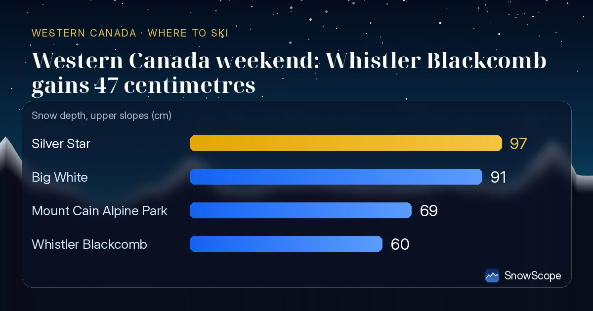
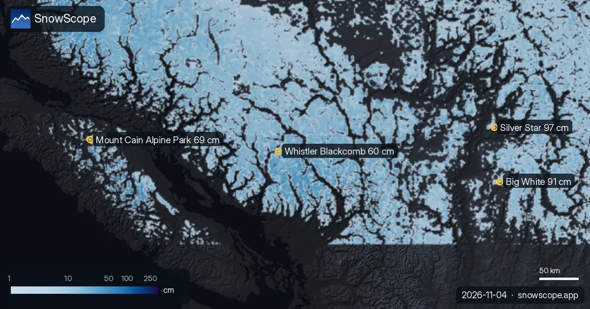

Western Canada weekend: Whistler Blackcomb gains 47 centimetres
If you are choosing where to ski this weekend, Whistler Blackcomb leads by forecast. The mountain will collect 47 centimetres of new snow from Thursday through Saturday, with the heaviest falls on Saturday morning.
See the live snow forecast for Mount Cain Alpine Park in the SnowScope appSnow depth, powder alerts and the 3D map, free.
Where the snow is coming
Rank these resorts by what they will gain over the next three days. Whistler Blackcomb sits at the top with 47 centimetres forecast. Mount Cain Alpine Park follows with 34 centimetres. Big White and Silver Star, both strong on the map today with 91 and 97 centimetres respectively in their upper slopes, will see only 6 and 7 centimetres of new material. This is not uncommon in early November: upper elevations of the drier interior have built reasonable snowpack already, whilst the coastal ranges are ready to load.
The story this weekend is not thickness; it is fresh snow at the right place.
| Resort | Snow depth | New snow, 72 h | Coming, next days | Top |
|---|---|---|---|---|
| Mount Cain Alpine Park | 69 cm | 5 cm | 34 cm | 1,616 m |
| Whistler Blackcomb | 60 cm | 1 cm | 47 cm | 2,259 m |
| Silver Star | 97 cm | 0 cm | 7 cm | 1,886 m |
| Big White | 91 cm | 0 cm | 6 cm | 2,271 m |

Height matters
At Whistler Blackcomb, the incoming snow will concentrate above 1,500 metres. Our estimates that the mid-elevations (around 1,456 metres) will gain 50 centimetres over the next week, whilst the summit will gain 74 centimetres. At the base, 653 metres, there is nothing: rain will fall there for most of the system. This is typical for coastal mountains in autumn.
At Mount Cain Alpine Park, the picture is steeper. The top (1,616 metres) will collect 27 centimetres of the 34 expected, whilst the base (1,190 metres) will get only 5 centimetres. That height difference matters. If you have flexibility, ski high and north-facing to find stable snow that has not been reworked by water.
The Thursday–Saturday push
The snow begins Thursday morning with 11 centimetres at Whistler Blackcomb and 9 centimetres at Mount Cain Alpine Park. Friday is the working day: Whistler takes another 16 centimetres, Mount Cain gets 21 centimetres. Saturday is dramatic. Whistler will see 20 centimetres of new snow, arriving in the morning. Mount Cain will see only 4 centimetres on Saturday as the system moves east.
If you want the freshest runs on Saturday, Whistler has the edge. If Friday is your day, Mount Cain could be less tracked.
Rain and crust
Watch the freezing level closely. On Thursday at Whistler Blackcomb it drops to 1,300 metres; snow falls above that line. By Saturday, it rises to 1,980 metres. This means that on Friday at Whistler, rain will fall to roughly 1,360 metres. Any snow below that will soften or crust. The upper slopes stay cold and dry.
At Mount Cain Alpine Park, the freezing level on Wednesday is variable (1,390–2,320 metres) and dips Friday morning, then rises Saturday. Early-season snow is thin everywhere. Rocks poke through at both resorts. Stay on groomed pistes to avoid damage to your skis and to your day.
What to check
Before you drive, ring the resort and confirm that lifts are open. The pattern ahead favours the high terrain at both mountains. Big White and Silver Star remain solid choices if you prefer established snow and stable conditions, but neither will refresh significantly this weekend. Whistler and Mount Cain are the play for fresh tracks.
Tips for skiers
- Whistler Blackcomb gains the most new snow on Saturday morning; Mount Cain peaks on Friday: plan your day accordingly.
- Both mountains see rain below 1,400 metres on Friday: aim for elevations above 1,500 metres for the best quality snow.
- Early-season snow is thin and rocks are common: stay on marked pistes and avoid off-piste terrain unless you have read the official avalanche bulletin and are with a qualified guide.
- Check the resort website to confirm lifts are running before you travel.
- North-facing slopes and high ridges hold snow longest into spring; they are your safety margin in November.
About these numbers
Resort snow depths are the deepest snow on the resort's upper slopes on the date shown; they are estimates for an area, not a measurement at one point. Forecasts can change. Always read the official avalanche bulletin before going off-piste.
Official avalanche bulletins: Avalanche Canada
Cite this report
For research, teaching or the press: the numbers and charts are free to reuse under CC BY 4.0 with this citation.
SnowScope (2026), Western Canada weekend: Whistler Blackcomb gains 47 centimetres, https://snowscope.app/blog/en/2026/11/western-canada-where-to-ski-this-weekend-4-november-2026.html, accessed 2026-11-04
SnowScope (Atlas Labs). (2026, November 4). Western Canada weekend: Whistler Blackcomb gains 47 centimetres. SnowScope snow reports. https://snowscope.app/blog/en/2026/11/western-canada-where-to-ski-this-weekend-4-november-2026.html
BibTeX
@misc{snowscope2026westerncanadawheretoskit,
author = {{SnowScope (Atlas Labs)}},
title = {Western Canada weekend: Whistler Blackcomb gains 47 centimetres},
year = {2026},
month = nov,
howpublished = {\url{https://snowscope.app/blog/en/2026/11/western-canada-where-to-ski-this-weekend-4-november-2026.html}},
note = {Published 2026-11-04 14:49 UTC; accessed 2026-11-04}
}· CC BY 4.0 · Methods, data and tools →
Mount Cain Alpine Park: snow and temperature by height, this winter vs last (tools) →
Follow Mount Cain Alpine Park
Free: a message when fresh snow is coming, and the forecast every morning.
More snow reports

Whistler Blackcomb received 100 cm of fresh snow in 72 hours to 8 November, but it fell unevenly: 96 cm at the summit, none at the base.

Whistler Blackcomb saw 76 cm of new snow in the last 72 hours, with Mount Cain Alpine Park also receiving 64 cm, as of November 16, 2026.

Whistler Blackcomb will receive 101 cm of new snow by November 25, far exceeding early-season norms. Mount Cain Alpine Park leads the region with 132 cm forecast.